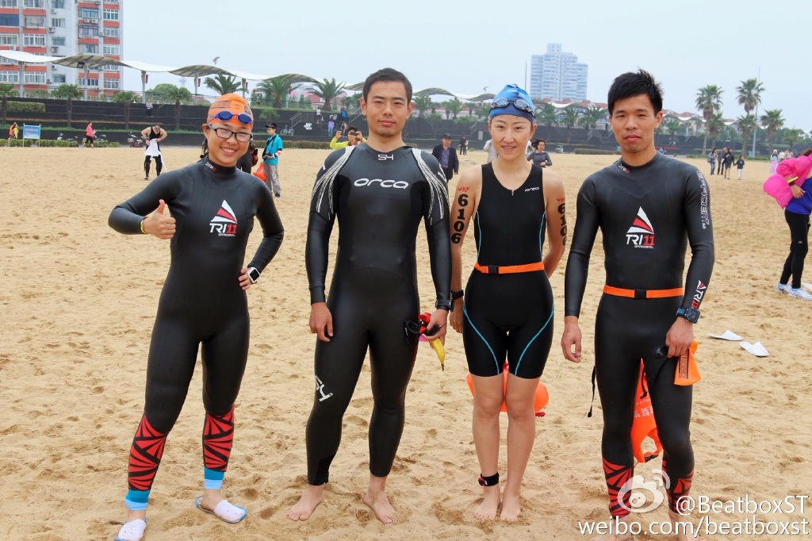
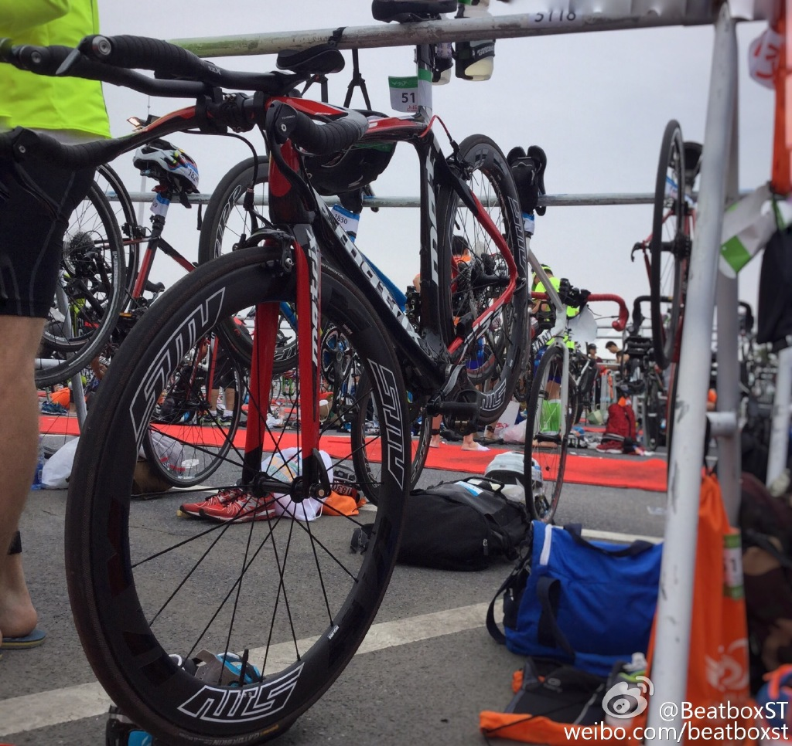
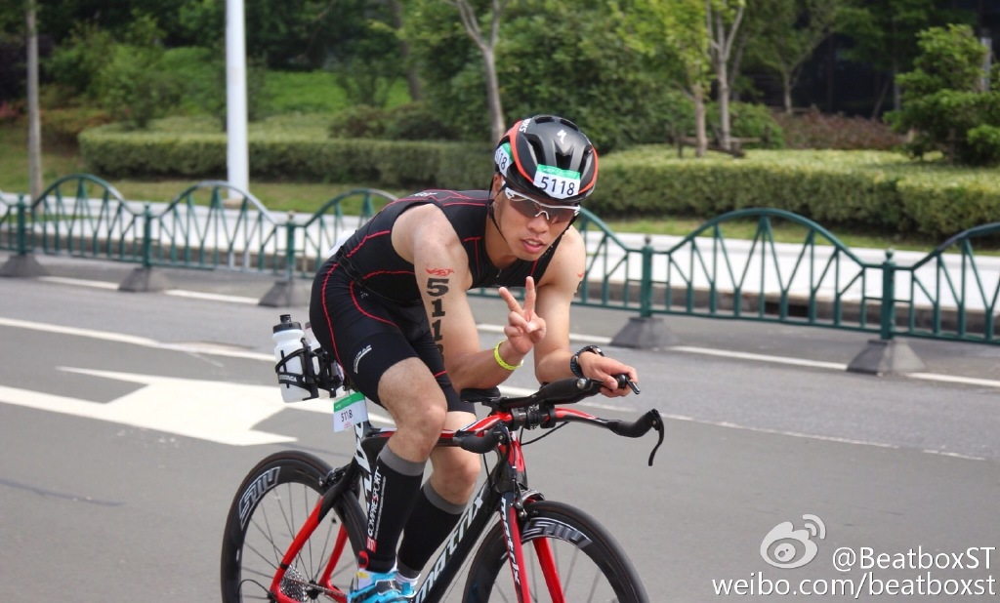
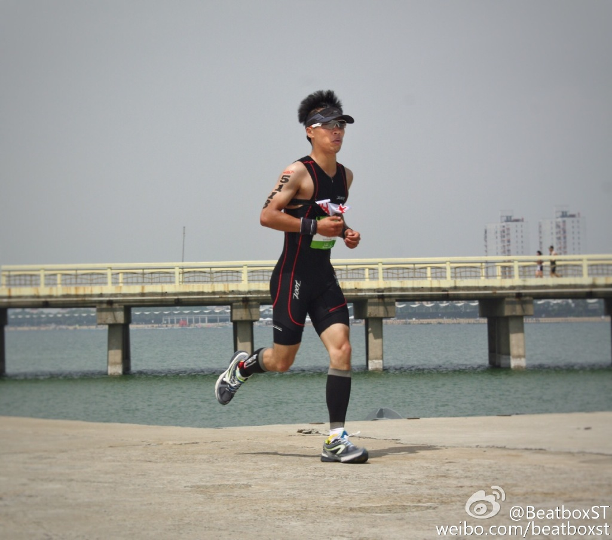
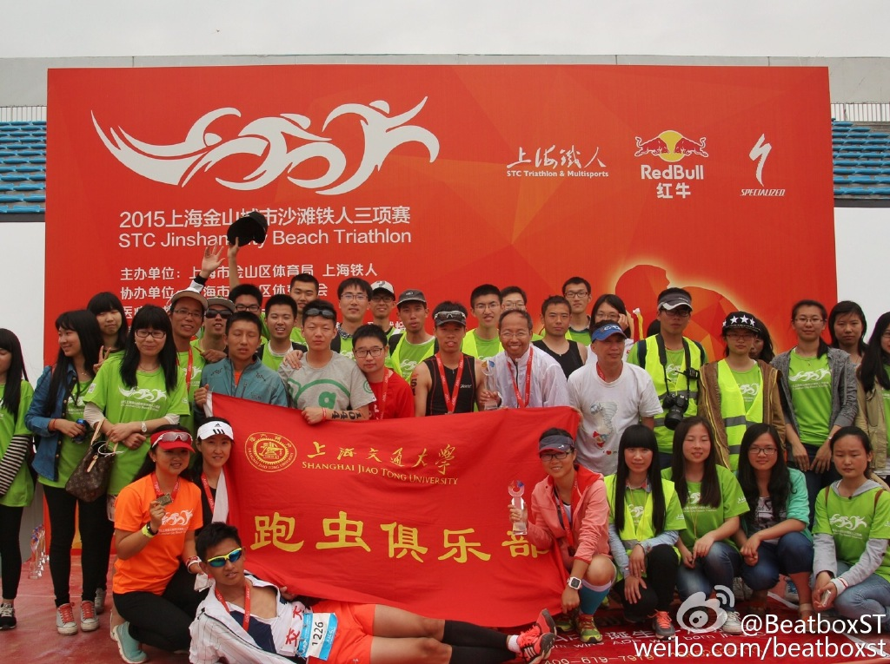

发信人: BeatboxST (ST), 信区: outdoor
标 题: 我的首次打铁
发信站: 饮水思源 (2015年05月21日01:19:21 星期四)
铁三已经完赛两三天了，终于找到了一个安静的晚上来好好回想一下这次印象深刻的比赛
，其实对于发哪个版我纠结了很久，因为我在野协做事，在车协参赛，参加过泳协的教学
，也为跑虫出过力，后来仔细想想，其实发哪个版没那么重要，喜欢运动的人总会聚到一
起的。考虑到野协也就我和高神参赛，了解铁三的人应该比较少，所以这篇文章就当普及
帖啦~~
对于铁三，其实我完全没有做好准备，首先是游泳，这是我的弱项。因为去年冬天交大游
泳馆开的时候，我还从未下过水，活生生的旱鸭子一只，前前后后下了几次水后，勉强能
蛙泳。这个学期3.18错过金山铁三早鸟报名后，我就一直在等待名额里，自己也没报什么
希望，打算是今年暑假好好练游泳，明年再参赛。结果4.20收到了一封邮件，说是有半程
替补名额，我脑袋一热就付了款= =。。。那时候距离比赛只有27天，我对自由泳还没有任
何概念，不过幸好，链轮车店王开元来交大开铁三讲座，又过了几天后来STC（本次比赛主
办方）也过来开宣讲会，老布说他第一次参赛从不会自由泳到完赛，只用了13天时间，每
天两次下水。我大致算了一下，大概也就30次左右下水，如果我从今天开始每天保证一次
下水，到比赛前应该能学会，于是狠心办了一张年卡。不过不知道是因为有了年卡不想便
宜游泳馆，还是因为游泳会上瘾，每天晚饭的时候去游泳这个习惯一直坚持到了现在。
 screen.width - 200){this.width = screen.width - 200}">
说了那么多废话，其实我只是想证明，一个不会游泳的人，下30次水后半程完赛绝对没问
题（当然我是说自由泳完赛），虽然蛙泳确实能完赛，可是蛙泳要游得好真是太难，而且
铁三后两项骑车跑步都要用到腿，用自由泳还是能节省不少腿力的。比赛那天的天气很给
力，水温21度，不穿胶衣在岸上还是挺冷的，我们半程比全程出发晚30分钟，由于对自己
游泳没信心，我游泳成绩报了25+，于是拿到了橙色的帽子，被排在了最后面出发，原以为
这样不会被大神踢来踢去，结果我想错了，一出去发现周围全是蛙泳腿，然后我就像皮球
一样，在躲避蛙泳腿的同时，被踢来踢去，还要不是抬头看看自己有没有游歪，就这样停
停顿顿一直游了15分钟，发现好像才出去没多少，于是一狠心往外游了几米然后蒙头自由
泳，期间正好有一个蛙泳的选手在我左边，每次呼吸都能看到他，速度也和我差不多，顿
时就找到了节奏，也不用抬头看浮标了，就这样一直坚持到了终点，不过时间也比较难看
，都块29分钟了、、、不过游泳能游完，我已经谢天谢地了，毕竟我在泳池从未一口气游
这么长，也多亏链轮推荐的胶衣，打个小广告，胶衣对新手自由泳的提高不是一点点，打
腿几乎都不费力。要知道我还是在泳池还不能连续游100米自由泳的菜鸟。
 screen.width - 200){this.width = screen.width - 200}">
上岸之后，半程换项区的车已经没几辆了。。。估计被拉了至少10分钟把，不过骑车跑步
算是我强项，这次赛道路况也比较好，一路顺风40+的速度超了很多人，感觉比较爽哈哈，
最后一公里时看了全程均速大概在34左右，因为之前看到大神的经验是骑车最后要放松，
于是就用20的均速晃到了终点，结果在下车线旁一外国佬流利地在车上脱完鞋子就朝换项
区跑，而我练扣子都没解开。。。然后尴尬地解了一只脚，结果脚还抽经了，没办法只好
慢慢的在众人面前脱另一只鞋，脱了大概二十秒才推车奔向换项区。
 screen.width - 200){this.width = screen.width - 200}">
跑步我倒是不是太担心，毕竟有两年部队长跑的底子，只是一开始抽经的感觉非常难受，
跑出去800米才有所缓解，路上遇到了好多交大的志愿者以及参赛的老师和同学，还遇到了
全程的高神，不过他要比我多一圈，所以没聊几句我就和他分开去冲终点了，不知道是因
为骑车时磕的咖啡因GEL缘故，跑步越跑越兴奋，步子也越来越大，踏频一直在185+，最后
一百米的时候看到了同样半程组的小宇，当时真是一惊，她竟然如此之快，真是女中豪杰
啊哈哈（最后她也当之无愧地拿到了全场的女子年龄组冠军）到了终点看时间是1小时32分
，劳栋已经在终点挂上牌子了，比我快五分钟左右把，他说他是亚军，在他前面还有一个
人。第三名是一个外国佬，换项的时候就在我左边，记得赛前他竟然说他昨晚还在天目山
玩越野穿越比赛，半夜才到的上海，真是被赤裸裸的殴打了。。。大概我不是第四就是第
五，反正已经无所谓了，我觉得第一次比赛能跑到这个成绩，已经很满意了。
 screen.width - 200){this.width = screen.width - 200}">
感觉金山铁三不像是一场比赛，而是一场party，在这里全世界各地的友人都会聚在一起，
一起享受比赛的乐趣，的确，比赛的过程比结果更有趣。对了，这次真的挺感谢姚姐的，
为这次比赛他肯定是操碎了心，帮我们拍照，协调志愿者，争取明年的半价名额，母性光
环真是太大。作为上海唯一一个组织玩铁三的学校（至少我知道目前就我们一个学校），
也希望以后交大玩铁三的人能越来越多，站台子的也越来越多。明年金山见！
 screen.width - 200){this.width = screen.width - 200}">
--
※ 来源:·饮水思源 bbs.sjtu.edu.cn·[FROM: 10.184.237.128]
※ 修改:·BeatboxST 于 2015年05月21日01:24:39 修改本文·[FROM: 10.184.237.128]
|